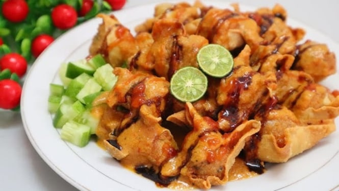

6 Menu Makanan Khas Jawa Barat 🌿

Nasi Liwet
Nasi gurih khas Sunda yang dimasak dengan santan dan disajikan dengan lauk sederhana.
Bahan-bahan:
- 2 gelas beras
- 400 ml santan encer
- 2 batang serai, memarkan
- 3 lembar daun salam
- 5 siung bawang merah, iris
- 3 siung bawang putih, iris
- 1 sdt garam
- Minyak untuk menumis
Cara membuat:
- Tumis bawang merah dan bawang putih hingga harum.
- Masukkan serai dan daun salam, aduk rata.
- Masukkan beras, aduk sebentar lalu tambahkan santan dan garam.
- Masak hingga santan menyusut, lalu kukus hingga matang.
- Sajikan dengan ikan asin, tahu goreng, dan sambal terasi.

Karedok
Salad tradisional Sunda dari sayuran mentah dengan bumbu kacang khas.
Bahan-bahan:
- 100 gr kol, iris halus
- 1 buah mentimun, iris tipis
- 50 gr tauge
- 10 helai kacang panjang, iris tipis
- Daun kemangi secukupnya
Bahan saus kacang:
- 150 gr kacang tanah goreng
- 2 siung bawang putih
- 3 buah cabai rawit
- 1 ruas kencur
- 2 sdm air asam jawa
- 1 sdm gula merah
- Garam secukupnya
- Air matang secukupnya
Cara membuat:
- Haluskan semua bahan saus kacang, tambahkan air hingga kekentalan sesuai selera.
- Campurkan sayuran mentah dengan saus kacang, aduk rata.
- Sajikan segar sebagai pelengkap makan siang atau malam.

Batagor
Bakso tahu goreng khas Bandung disajikan dengan saus kacang yang gurih pedas.
Bahan-bahan:
- 250 gr daging ikan tenggiri giling
- 100 gr tepung tapioka
- 2 siung bawang putih halus
- 1 batang daun bawang, iris
- 10 buah tahu putih, belah segitiga
- Air es secukupnya
- Garam dan merica secukupnya
- Minyak untuk menggoreng
Cara membuat:
- Campur ikan giling, bawang putih, daun bawang, tepung, garam, merica, dan air es secukupnya hingga adonan kalis.
- Isi tahu dengan adonan ikan, tekan agar menempel.
- Panaskan minyak, goreng tahu isi hingga keemasan. Angkat dan tiriskan.
- Sajikan dengan saus kacang dan kecap manis, tambahkan jeruk limau jika suka.

Mie Kocok
Mie berkuah kaldu sapi dengan kikil, taoge, dan seledri khas Bandung.
Bahan-bahan:
- 200 gr mie kuning basah
- 300 gr kikil sapi, rebus empuk
- 1 liter kaldu sapi
- 2 siung bawang putih, cincang
- 100 gr taoge, seduh air panas
- 1 batang daun bawang, iris
- Seledri dan bawang goreng
- Garam dan merica secukupnya
Cara membuat:
- Tumis bawang putih hingga harum, masukkan ke dalam kaldu sapi.
- Tambahkan kikil, garam, dan merica. Rebus 10 menit.
- Siapkan mangkuk, masukkan mie dan taoge. Siram dengan kuah dan kikil.
- Taburi bawang goreng, daun bawang, dan seledri. Sajikan panas.

Sate Maranggi
Sate daging sapi khas Purwakarta dengan bumbu kecap dan sambal oncom.
Bahan-bahan:
- 500 gr daging sapi, potong dadu
- 5 siung bawang putih
- 3 sdm ketumbar sangrai
- 5 sdm kecap manis
- Air jeruk nipis dan garam secukupnya
Cara membuat:
- Haluskan bawang putih dan ketumbar, campur dengan kecap dan jeruk nipis.
- Marinasi daging minimal 1 jam.
- Tusuk daging pada tusuk sate, lalu bakar hingga matang sambil sesekali dioles bumbu.
- Sajikan dengan nasi atau lontong serta sambal oncom khasnya.

Empal Gentong
Gulai khas Cirebon berbahan daging sapi dan jerohan dengan kuah santan gurih.
Bahan-bahan:
- 500 gr daging sapi dan jerohan
- 1 liter santan
- 5 siung bawang merah
- 3 siung bawang putih
- 2 cm kunyit, jahe, lengkuas
- 2 batang serai, memarkan
- 3 lembar daun salam
- Garam dan kaldu bubuk
Cara membuat:
- Rebus daging dan jerohan hingga empuk, potong-potong.
- Tumis bumbu halus bersama serai dan daun salam hingga harum.
- Masukkan santan dan daging, masak hingga mendidih dan bumbu meresap.
- Sajikan panas dengan nasi atau lontong.